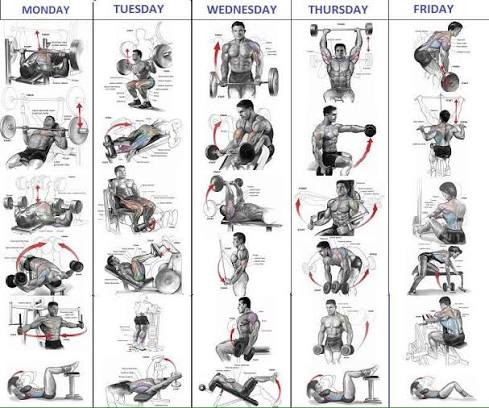

Rutinas de Gimnasio Avanzadas
Publicado el por Jean Paul Tipan

Mejorar el rendimiento físico requiere de constancia, una técnica adecuada y una planificación estructurada que permita potenciar el crecimiento muscular de forma segura.
Pasos para optimizar tu rutina de hipertrofia
- Establecer una frecuencia de entrenamiento adecuada para cada grupo muscular.
- Aplicar una correcta sobrecarga progresiva en cada sesión de pesas.
- Mantener un descanso óptimo y una alimentación rica en proteínas.
Comparativa de Métodos de Entrenamiento
| Método | Ventaja | Precio |
|---|---|---|
| Rutina Weider (Dividida) | Mayor enfoque y congestión por cada grupo muscular. | Gratis |
| Rutina Full Body | Mayor frecuencia de estímulo ideal para principiantes. | Gratis |